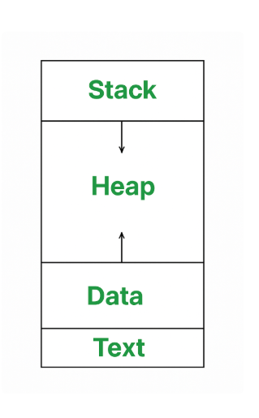

When a program is executed, it becomes a process.
One program can create multiple processes (eg. by running it multiple times)

Stack: contains temporary data (eg. function params, return addresses, etc.)
Heap: memory dynamically allocated to a process during its run time
Data: contains global variables
Text Section: contains execeutable instructions, typically read-only
Each process will have these attributes.
These attributes help the operating system manage and control processes effectively.
They are stored in a sturcutre called the Process Control Block (PCB).
◆︎ ◆︎ ◆︎
| Process ID | Unique to each process. How the operating system identifies the process |
| Process State | Current status of the process (eg. running, waiting, ready to execute) |
| CPU Scheduling Information | Data that helps the OS determine the next process to run |
| I/O Information | Which input/output devices is the process using? |
| File Descriptors | Open files, network connections, etc. |
| Accounting Information | Eg. how long the process has run, CPU time used, etc. |
| Memory Management Information | Details about the processes' memory space |